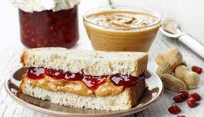

Home
Classic PB&J

A peanut butter and jelly sandwich (PB&J) consists of peanut butter and
fruit preserves—jelly—spread on bread. The sandwich may be open-faced,
made of a single slice of bread folded over, or made using two slices of
bread.
Ingredients
Ingrdients are but not limited to:
- Bread
- Peanut Butter
- Grape Jelly
- Spoon or Butter-Knife
Recipe!
-
On one slice of bread, spread peanut butter evenly over the bread.
-
On the other slice of bread, spread the jelly evenly over the bread.
-
Put the two slices of bread together with the peanut butter and jelly
facing in.
- Optional: Remove crusts, cut diagonally
- Serve and enjoy!